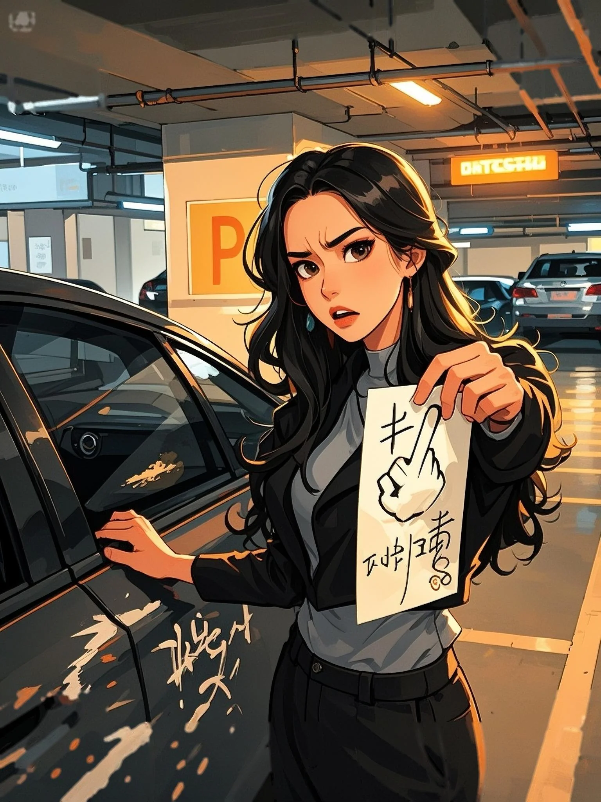

Sai Ghế, Sai Người
Trên chuyến tàu cao tốc về trường, có người ném hành lý chắn ngay trước mặt tôi.Tôi lễ phép nhắc nhở, đối phương liếc qua chiếc vali in khẩu hiệu trường của tôi, khẽ cười khẩy:“Sinh viên mới à? Ghế này bị tôi trưng dụng rồi. Cậu có ba giây để dọn đồ đi chỗ khác.”Tôi cau mày nhưng vẫn cúi đầu xem điện thoại.Cô ta bất ngờ đập mạnh bàn, giọng cao vút:“Cậu mù hay điếc thế hả? Không thấy phù hiệu ban cán sự hội sinh viên trên người tôi à?!Cậu học khoa nào? Với thái độ này, tôi nhất định ghi tên cậu vào sổ kỷ luật.”Tôi nhàn nhã mở miệng:“Luật.”Cô ta nhíu mày:“Trả lời tiền bối thì phải cúi chín mươi độ, nói “chào chị”. Không hiểu quy củ à?Cậu vi phạm ba điều nội quy rồi, lập tức hít đất năm mươi cái!”Tôi bật cười.Tôi đã làm việc ở A Đại bốn năm, chính tôi soạn ra nội quy, sao lại chẳng nhớ có mấy điều vô lý này?…Cô ta lại hung hăng đập bàn:“Trả lời! Cậu điếc à? Tôi không thích lặp lại lần hai! Ngay bây giờ, lập tức, hít đất chuẩn bị!”Tôi cố nén giận:“Nói lý một chút đi, ghế này là tôi bỏ tiền mua.”Cô ta trợn mắt:“Thì sao? Tôi cũng bỏ tiền lên tàu, chỉ là không mua được vé thôi. Sao tôi không được ngồi?”Tôi bật cười khẩy:“Khẩu khí thật lớn.”Cô ta hơi ngẩng cằm, ánh mắt đầy kiêu ngạo:“Tự giới thiệu, tôi là Diệp Thanh Thanh, thành viên hội sinh viên, cũng là trợ lý hướng dẫn tân sinh viên khóa cậu. Cậu biết điều đó nghĩa là gì không?”Thấy tôi im lặng, khóe môi cô ta nhếch lên, tiếp tục:“Nghĩa là tôi có quyền xử phạt cậu bất cứ lúc nào. Chỉ cần một câu của tôi, lỗi của cậu sẽ bị ghi vào hồ sơ.Cãi nhau với tôi chỉ vì một cái ghế, nếu bị ghi vào hồ sơ, cả đời này cậu đừng mơ ngồi tàu cao tốc, chẳng ai cứu nổi.”Cái giọng điệu ngông cuồng ấy khiến tôi nhíu mày.Từ bao giờ một sinh viên lại có thể đứng trên những sinh viên khác?Nhìn cách cô ta quen tay quen miệng, rõ ràng không phải lần đầu làm chuyện này.Tôi ép mình nhẫn nhịn.Dù sao hôm nay cũng là ngày đầu tiên đến phân hiệu báo danh, tự nhắc mình không nên chấp nhặt.